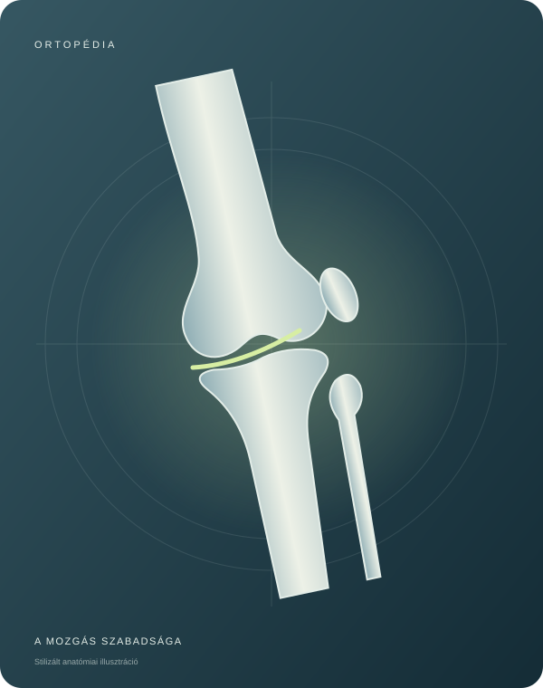

Gerinc és derék
Hátfájdalom, tartással kapcsolatos kérdések vagy a derék visszatérő panaszai.

Egy könnyebb lépés. Egy szabadabb mozdulat.
Dr. Kovács Tünde ortopéd szakorvos
Győrben, a Szent Imre úton.
Séta a városban. Lépcsőzés. Egy aktív hétvége. Amikor a mozgás nehézzé válik, kérdések merülnek fel. Az ortopédiai konzultáció lehetőséget ad arra, hogy ezekről személyesen beszéljen.
Néhány gyakori téma, amellyel kapcsolatban érdemes ortopéd szakorvossal egyeztetni.
Hátfájdalom, tartással kapcsolatos kérdések vagy a derék visszatérő panaszai.
Terhelésre jelentkező fájdalom, merevség vagy beszűkült mozgás.
A láb terhelése, járás közbeni kellemetlenség és a lábboltozat kérdései.
A témák tájékoztató jellegűek. A vállalt vizsgálatokról és az ellátás részleteiről előzetesen érdeklődjön.
A személyes találkozás egy rövid egyeztetéssel kezdődik.
Írjon e-mailt, és jelezze, hogy ortopédiai konzultációról szeretne érdeklődni.
Kérjen tájékoztatást a szabad időpontokról, a vizsgálatról és annak díjáról.
Korábbi leleteit, képalkotó vizsgálatainak eredményét és gyógyszerlistáját érdemes magával hoznia.
A drkovacstunde@gmail.com címen érdeklődhet a konzultáció és az időpont-egyeztetés lehetőségeiről. Az e-mail elküldése önmagában nem jelent visszaigazolt foglalást.
Korábbi orvosi leleteit, az esetleges röntgen-, MR- vagy CT-vizsgálatok eredményét és szedett gyógyszerei listáját. A pontos teendőket egyeztetéskor kérdezze meg.
Győr, Szent Imre út 41. A lenti útvonaltervezővel megtervezheti az utazást; az érkezés részleteit előzetesen egyeztesse.
Kapcsolat és időpont-egyeztetés.
Útvonaltervezés a Google Térképen.
Az aktuális időpontokról érdeklődjön.